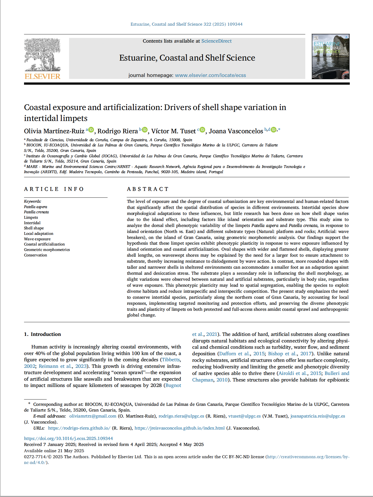

FCT Project
APPROVED
Metacommunity dynamics of complex life cycle species in exploited ecosystems, EXPL/MAT-APL/0262/2021.

Project Info
| Name | Description |
|---|---|
| Title | Metacommunity dynamics of complex life cycle species in exploited ecosystems |
| Reference | EXPL/MAT-APL/0262/2021 |
| Project Acronym | LAPACOM |
| Funding Entity | Fundação para a Ciência e a Tecnologia |
| Amount funded | 49.833,51€ |
| Starting Date | 01/12/2021 |
| Duration | 24 months |
| Principal Researcher | Dr. Joana Vasconcelos (UMa) |
| Co-Principal Researcher | Dr. Rodrigo Riera (IU-ECOAQUA, ULPGC) |
| Research Team | Dr. Carlos Melián (EAWAG), Dr. Ricardo Sousa (DRM), Eros Geppi (Grant), João Ferro (Grant) |
| Research Associates | Dr. Ali Vahdati (University of Zurich, Subcontract), Dr. Víctor M. Eguíluz (IFISC (UIB-CSIC)) |
Institutions
Beneficiary
- UMa - University of Madeira.
Others
- IU-ECOAQUA® - University Institute of Aquaculture and Sustainable Marine Ecosystems.
- Eawag - Swiss Federal Institute of Aquatic Science and Technology.
- DRM - Regional Directorate for the Sea.
Aim
The main purpose of the present proposal is to explore complex life cycles in metacommunities to predict future scenarios in human-exploited ecosystems.
Background
Human sprawl is all over the globe, affecting most species on Earth. Ecosystems are becoming increasingly fragmented, causing habitat loss and species ranges reduction through shifts on the structure, diversity, dynamics, species composition and recruitment rates of communities. Most metacommunity studies have explored biodiversity dynamics considering simple lifecycles. Yet, the effects of habitat loss and exploitation on complex life cycles species in metacommunities are currently unknown.
Besearch plan
We propose a project combining experiments, database analysis and modeling from intertidal metacommunities as a case study to explore future trajectories in fragmented and exploited ecosystems accounting for spatial structure, complex life cycles, migration and demographic processes. This will be achieved by focusing on three main objectives: (1) Infer how complex life cycles are influencing persistence trajectories along disturbed metacommunities; (2) Interpreting the role of human-exploitation on spatial synchrony and extinction probability; and (3) Explore diversity patterns at intra-and inter-specific level to disentangle the role of the spatial structure in predicting metacommunity persistence.
Project Tasks
- Task 1: Project Management
- Task 2: Fecundity Estimation
- Task 3: Data Standardization
- Task 4: Formulation of the Model Structure and Implementation of the Model in Open Software
- Task 5: Parametrisation and Simulations of the Different Scencarios of the Modelling in a Workstation
- Task 6: Model-Data-Comparisons using Approximate Bayesian Computation (ABC) Methods
- Task 7: Generation of Jupiter Notebook to Facilitate Reproducibility of the Whole Modelling and Model-Data Cycle
- Task 8: Outreach and Dissemination Actions

LAPACOM's Promotional Marketing
(FCT, EXPL/MAT-APL/0262/2021)


Publications to disseminate project results
1. Ferro, J., Sousa, R., Riera, R., Freitas, M., Vasconcelos, J. 2022. Fecundity strategy of the highly exploited limpet Patella ordinaria from an oceanic archipelago. International Symposium on Artisanal and Recreational Fishing in Islands Systems: Assessment, Vulnerabilities and management (IS-AR-FIS), Las Palmas de Gran Canaria, 6th -8th July 2022.
DOI: 10.13140/RG.2.2.26203.34088
2. Vasconcelos, J., Sousa, R., Ferro, João, Pinto, A.R., Freitas, M., Riera, R. 2023. Fecundity, an overlooked life-history trait for coastal management of commercial molluscs?. Frontiers in Marine Science 10, 1173629.
DOI: 10.3389/fmars.2023.1173629
3. Vasconcelos, J., Ferro, João, Sousa, R., Pinto, A.R., Riera, R. 2023. Fecundity strategy of the highly exploited limpet Patella ordinaria from an oceanic archipelago. Regional Studies in Marine Science 60, 102849.
DOI: 10.1016/j.rsma.2023.102849

4. Martínez Ruiz, O., Riera, R., Tuset, V.M., Vasconcelos, J. 2025. Coastal exposure and Artificialization: Drivers of Shell Shape Variation in Intertidal Limpets.
Estuarine, Coastal and Shelf Science 322C, 109344 DOI: 10.1016/j.ecss.2025.109344.
5. Vasconcelos, J., Angulo, P., Martínez-Ruiz, O., Díaz, A.R., Tuset, V.M. 2025. Adaptive Reproductive Strategies of Limpets in a Harvest-Influenced Environment. Fisheries Oceanography, e12745. DOI: 10.1111/fog.12745
6. Riera, R., Vasconcelos, J. 2024. ¿Por qué es importante conocer la fecundidad de especies comerciales? El caso de las lapas comerciales del archipiélago de Madeira. Rev. Soc. Atlant. Oceanog. Okeanos, 18 (enero-junio).
7. Riera, R., Vasconcelos, J. 2024. ¿Por qué muchas especies marinas tienen ciclo de vida complejo? ¿Qué ventajas otorga en comparación al ciclo de vida simple? To be published in Rev. Soc. Atlant. Oceanog. Okeanos, 19 (July-Dec).
Final thesis

Project title: Fecundity strategy in Patella aspera and Patella crenata from the Canary Islands (NE Atlantic)
Student: Pablo Jesús Angulo Falcón
Supervisor: Joana Vasconcelos
Entity: University of Las Palmas of Gran Canaria
City of entity: Las Palmas of Gran Canaria, Spain
Degree: Marine Sciences
Academic year: 2023-2024
Grade: With distinction (Sobresaliente)
Defense date: September 4, 2024

Project title: Unravelling the key environmental drivers in the limpets of a highly anthropogenised region
Student: Olivia Martínez Ruiz
Supervisor: Joana Vasconcelos/ Co-Supervisor:Rodrigo Riera
Entities: University of Las Palmas of Gran Canaria / Universidade da Coruña
Master: Marine Biology
Academic year: 2023-2024
Grade: 9.8/10 (with honors)
Defense date: June 28, 2024
Project title: Fecundity Regulation Strategy of the Limpet, Patella ordinaria, of Madeira Island (NE Atlantic)
Student: João Paulo Silva Ferro
Supervisor: Joana Vasconcelos / Co-Supervisor: Rodrigo Riera
Entity: University of Madeira
Degree: Biochemistry
Academic year: 2021-2022
Obtained qualification: 18 (maximum score: 20)
Date of defense: May 25, 2022
LAPACOM in the local news
ULPGC, Canaries
Our LAPACOM project funded by FCT featured in the local news in the Canary Islands (Radio Television Canaria, RTVC)..
LAPACOM's timeline video and outputs
(FCT, EXPL/MAT-APL/0262/2021)
LAPACOM Project workshop at ULPGC
(FCT, EXPL/MAT-APL/0262/2021)
Between May 8th and 12nd, the 4rd meeting and workshop of the Project "Metacommunity dynamics of complex life cycle species in exploited ecosystems" (LAPACOM, EXPL/MAT-APL/0262/2021), funded by Fundação para a Ciência e a Tecnologia (FCT), took place at the Polivalente II building of the Parque Cientifico y Tecnologico of the Universidad de Las Palmas de Gran Canaria (ULPGC).


3rd Meeting and Workshop of LAPACOM Project
EXPL/MAT-APL/0262/2021 (FCT)
Between March 27th and 31st, the 3rd meeting and workshop of the Project "Metacommunity dynamics of complex life cycle species in exploited ecosystems" (LAPACOM, EXPL/MAT-APL/0262/2021), funded by Fundação para a Ciência e a Tecnologia (FCT), took place at the "NEXO" building of the Universidad de Las Palmas de Gran Canaria (ULPGC). The PI of the project Dr. Joana Vasconcelos (UMa/ULPGC, Portugal/Spain), the Co-PI Dr. Rodrigo Riera (ULPGC, Spain), Dr. Carlos Melián (EAWAG, Switzerland) and the fellow Eros Geppi (ULPGC, Spain) were present. These were joined via ZOOM by Dr. Ali Vahdati (University of Zurich, Subcontract) and Dr. Víctor M. Eguíluz (IFISC (UIB-CSIC)). There were also some workshops for brainstorming and interchange of ideas with other researchers from the ULPGC, namely Dr. Raul Quesada, Dr. José Landeira, Dr. Adrián Peñate and Dr. Víctor Tuset.

Workshop at EAWAG
The second meeting of the project LAPACOM was held in the EAWAG headquarters in Horw (Lucerne, Switzerland) during August. This meeting concurred with a workshop organized by Dr. C. Melián from EAWAG. Several researchers participated in this event, Dr. Joana Vasconcelos (UMa), Dr. Rodrigo Riera (ULPGC), Dr. Ali Vahdati (University of Zurich) and Dr. Victor M. Eguíluz (IFISC (CSIC-UIB).

“A DAY IN THE LIFE OF A RESEARCHER”
HORÁCIO BENTO DE GOUVEIA SCHOOL
Lecture “A day in the life of a Researcher” at the Horácio Bento de Gouveia School, within the scientific outreach activities foreseen in the R&D Project approved by the Foundation for Science and Technology (FCT), “Metacommunity dynamics of complex life cycle species in exploited ecosystems” (EXPL/MAT-APL/0262/2021). The speakers of this lecture were Dr. Rodrigo Riera (ULPGC), Dr. Carlos Melian (EAWAG) and Dr. Ali Vahdati (University of Zurich).


“SENIOR LECTURES AT UNIVERSITY OF MADEIRA”
LAPACOM PROJECT
 On January 26th, at the University of Madeira (Edifício da Penteada, Senate room, floor -2) a series of lectures were given by researchers of the project entitled “Dynamics of metacommunities of species with complex life cycles in explored ecosystems (LAPACOM)”.
On January 26th, at the University of Madeira (Edifício da Penteada, Senate room, floor -2) a series of lectures were given by researchers of the project entitled “Dynamics of metacommunities of species with complex life cycles in explored ecosystems (LAPACOM)”.
Program/Oral presentations:
- 16:00 – Presentation of Invited Speakers in the scope of LAPACOM project.
- 16:10 - “Integration of Theory and empirical data”, Dr. Carlos Melián, EAWAG.
- 16:35 - “What is coding? Why is cool?”, Dr. Ali Vadhati, University of Zurich.
- 17:00 - “How are species distributed? What are metacommunities?”, Dr. Rodrigo Riera, University of Las Palmas de Gran Canaria.